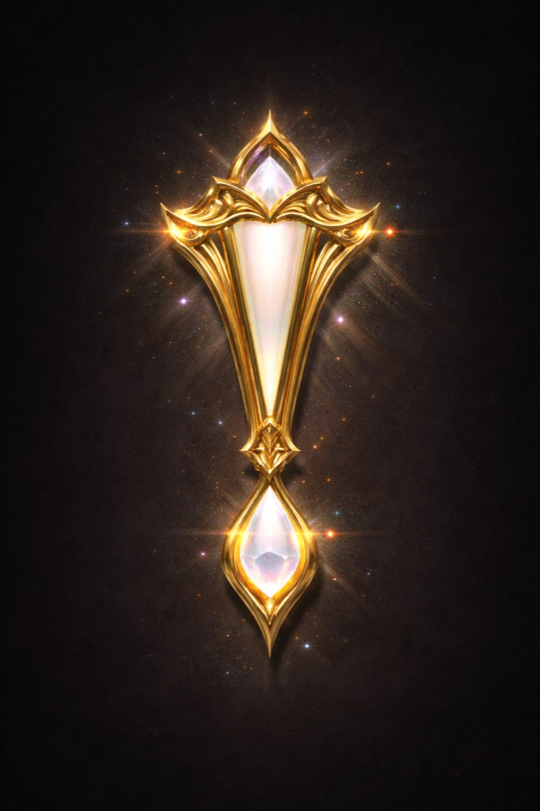
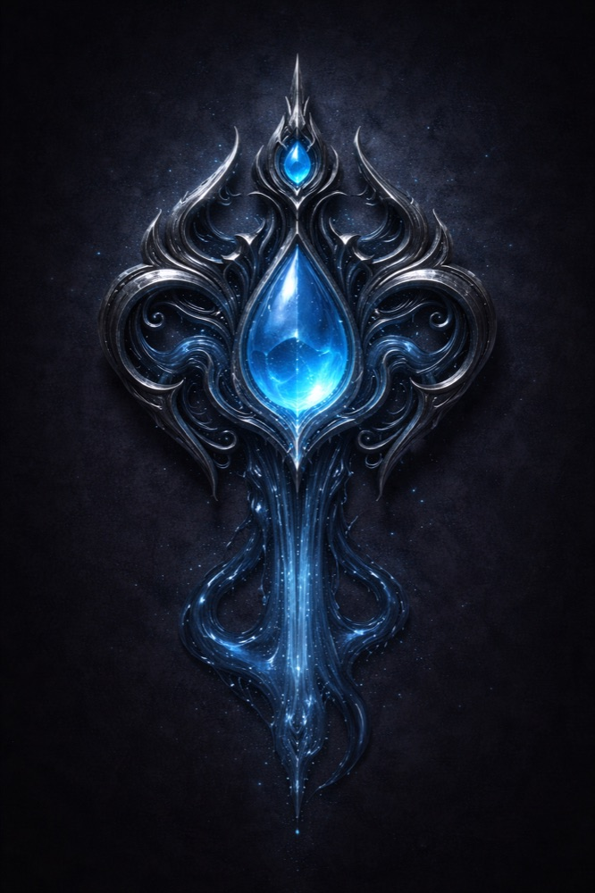
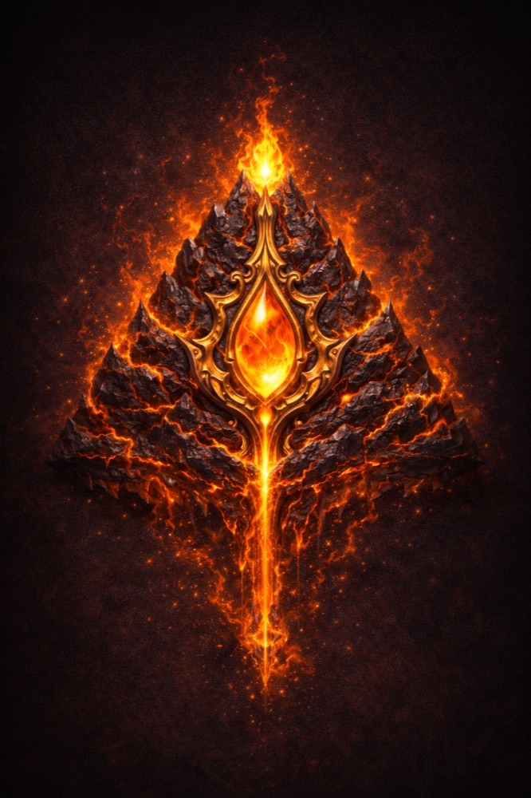
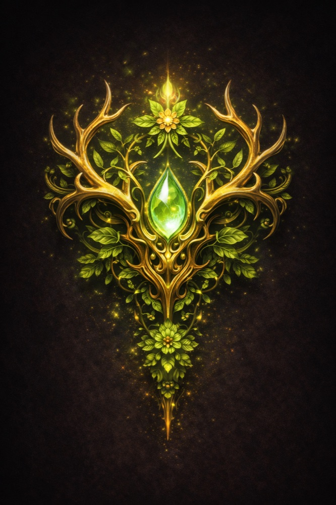

Every one of them wants the Returners.
That is the part everybody in Alrathel notices first. Whatever a Returner is, four powers who agree on almost nothing have all decided that these arrivals matter, and none of them has explained why. No temple owns the answer. No priest can tell you which of them, if any, opened the way.
They are not four faces of one idea, and they are not interchangeable. Their architecture is different. Their rituals are different. Their idea of where worship belongs is different. Swapping one god's mark onto another god's building is not a variation — it is a mistake, and the locals will tell you so.
One pantheon, four marks
All four symbols share a single silhouette: a tall, roughly diamond form with a luminous gem at its heart, ornament spreading at the shoulders, tapering to a point below. This is deliberate and ancient. You are meant to see one pantheon in them, not four unrelated signs.
Each mark exists at every scale it is needed at — ten feet tall on a temple wall, and small enough to hang at a throat.

Aurelia
Goddess of Light · Holy and Air
The most worshipped power in the world, and has been for centuries. Angelic in every depiction: robed, winged, hooded — and the hood covers her eyes entirely, so that only the mouth and jaw are ever visible. Every cathedral painting shows her that way. There is no tradition of showing her face, and there never has been.
Where she is worshipped
Formally, at the great cathedral in Eldrath and at local temples in every human city. But Aurelia is also the god of the household — a mark cut into a mantelpiece, an amulet worn under the collar, a lamp kept lit by the door. She receives no roadside shrines. She is not a god you leave something for on your way past; she is a god you keep in the house.
Humans and High Elves are her people by default. The Nocturne — a twilight folk whose eyes suffer in bright daylight — are, to the confusion of nearly everyone, her most fervent worshippers in the world.
What people say
That Aurelia sent the Returners. That she saw a Demon King coming who would make the last one look small, and began pulling heroes across from wherever heroes come from.
It is the most popular belief in Alrathel and it is repeated in sermons, in inns, and by parents to children. No temple has produced evidence for it. It remains what it has always been: what people say.

Ogoth
God of the Deep · Darkness, Sleep, Shadow and Water
The oldest kind of fear, given a name. Ogoth's iconography is many-armed and unsettling on purpose, and his worship has never been public architecture. There is no cathedral of Ogoth. There is no bishop of Ogoth who will see you on a Tuesday.
Where he is worshipped
His organised faith is a multi-armed cult, and it meets at secret altars — in cellars, in caverns, in rooms whose doors are not on any plan of the building. Among the dark elves of Val'thar, a large and powerful minority have pledged themselves to him entirely. He is one of several gods in dark elf life, not the only one.
But the cult is not the whole of him. He is a god of Water as much as of the Deep, and every sailor in Tidehaven knows his name whether or not they would admit to it. Harbour dread is real. So is the private bargain struck at three in the morning by someone becalmed a long way from shore.
I have kept a lamp burning ever since. I am not going to explain it and I would thank you not to ask.
Captain Miquella

Hefen
God of the Mountains · Earth and Fire
Enormous, burning, and utterly without ceremony. Hefen is depicted as a flaming barbarian — not a king on a throne but a thing of stone and fire that walks. The dwarves of Deepforge are fiercely devoted to him, and are not quiet about it.
Where he is worshipped
At shrines. Some stand in the middle of a village, where the whole community passes them daily. Others mark a mountain pass, put there by whoever came through last with the strength to lift a stone. You pay your respects at one on your way by. That is the entire liturgy.
What people say
That he ate his brother. The story goes that Hefen had a twin, and the twin was the god of fire, and Hefen ate him — which is how a god of mountains came to burn.
That volcanoes are tantrums. When a mountain opens up and throws fire at the sky, that is Hefen having a fit somewhere underneath it. Dwarven engineers will explain the actual mechanics of a volcano at length and then, at the end, agree that this is also true.
Neither claim has ever been confirmed by anyone in a position to know.

Vivili
Goddess of Life · Nature
Antlered, green, and everywhere that grows. Vivili is the least institutional of the four: no cathedral, no cult, no shrine on the roadside where you can nod at her and keep walking. She asks you to come to her, and to come some distance.
Where she is worshipped
At stone circles, standing deep in wild country. The circle is the thing worshipped at; the wood is simply where it stands. Prayer and ceremony happen there, at the proper times, with people who walked out to be present — which is most of the work, and is meant to be.
The peoples of the Sacred Grove — the wood elves and their beastkin allies — are largely hers.
Choosing one
Nothing forces a Returner to choose. Plenty never do, and no door in the world closes because of it.
What is true is that all four are paying attention, that their followers will notice which shrines you stop at, and that in a world where four powers are actively courting the same handful of newcomers, indifference is also an answer.